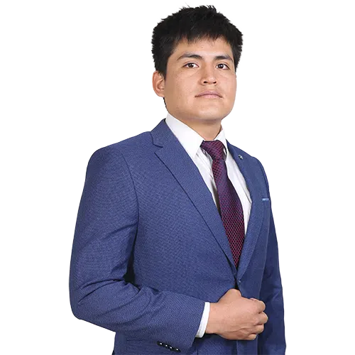

Estudiante comprometido con la innovación y el desarrollo estudiantil. Líder natural con visión de futuro, comprometido con la comunicación transparente y el desarrollo de nuestra comunidad universitaria.
Soy Henry Josue Flores Saras, un estudiante comprometido con la comunicación transparente y el desarrollo de nuestra comunidad universitaria. Me caracterizo por mi capacidad para contar historias, mi creatividad y mi enfoque estratégico para conectar con las personas. Creo firmemente en el poder de una comunicación clara y efectiva para impulsar proyectos e integrar a toda nuestra escuela.
He desarrollado flyers aplicando conocimientos en redacción, diseño digital y manejo de herramientas de comunicación para visibilizar diversos trabajos.
Poseo experiencia en deep learning y participo activamente en un círculo de investigación en CIIASI. He asistido a dos ponencias relevantes: ICA COISEIN de la Universidad UNSG de ICA y el V Congreso Internacional de Ingeniería de Sistemas (V COINSI 2025) en la UNAP.
Actualmente investigo sobre clasificación de cáncer de piel mediante aprendizaje por transferencia, demostrando habilidad para expresarme y colaborar en el ámbito académico y científico.
Estrategia y gestión de contenidos para redes sociales, creando mensajes atractivos y alineados con los objetivos de la comunidad.
Redacción clara y creativa para comunicar ideas complejas de manera sencilla y efectiva.
Diseño básico con herramientas digitales como Photoshop, Corel e Illustrator para apoyar contenidos visuales atractivos.
Trabajo en equipo y coordinación de voluntarios para optimizar la ejecución de proyectos y actividades.
Capacidad para comunicar ideas complejas de manera sencilla y conectar con diferentes públicos.
Transformar la comunicación de nuestro Centro de Estudiantes en un canal dinámico, bidireccional y de confianza. Aspiro a que cada estudiante se sienta informado, representado y orgulloso de pertenecer a nuestra escuela, utilizando la prensa no solo para informar, sino como una herramienta clave para el desarrollo de un sentido de comunidad y pertenencia.